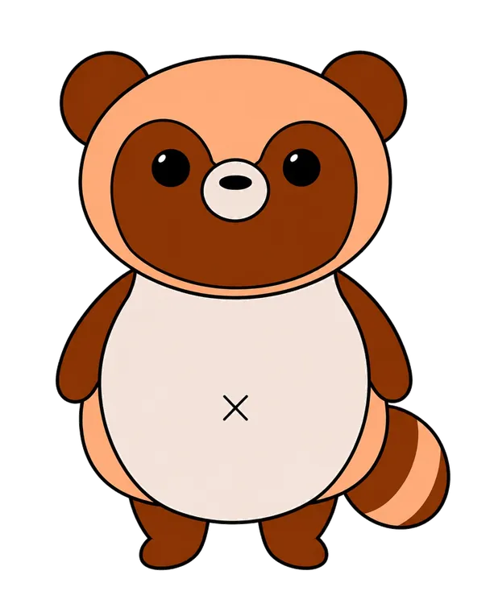

- YUZUKOSHO -
気が向いたときに、ふらっとのぞけるゲーム配信の場所。
柚胡椒の秘密基地は、Twitchでのゲーム配信や活動情報をまとめたホームページです。
配信予定、プロフィール、YouTube、X、Discordへのリンクを、初めて来た人にも分かりやすくまとめています。
LIVE確認中
Twitchの配信状態を確認してるよ…
🎮 今日のゲーム：準備中

ふらっと来て、のんびり見て、気軽にコメントしてってね〜！
VISIT STAMP
📮 来場スタンプカード
この端末で1日1回、来場した日に自動で「済」スタンプが付きます。直近2ヶ月分を確認できます。
今日の来場スタンプ：確認中
連続来場 0 日
2ヶ月内 0 日
隠しページの解放状況を確認中…
連続来場が増えると、秘密基地の隠しページが開きます。
あと15回の来場スタンプで、1回目のごほうび部屋が解放されます。
隠しページへ行く →

Discordでも待ってるよ〜！
FIRST VISIT
🌙 はじめて来た人へ
柚胡椒の秘密基地は、ゲーム配信をゆるく楽しむ場所です。
💬
初見コメント歓迎
あいさつだけでもOK。気軽にコメントしてね。
👀
ROM専もOK
見るだけでも大丈夫。のんびり楽しんでね。
🎮
ゲーム配信中心
Twitchでゲーム、雑談、参加型などを配信中。
🔔
予定は各SNSで案内
X・Discord・Twitchで配信予定をお知らせします。
まずはTwitchをのぞいて、気になったらDiscordやXもチェックしてね。
📅 配信予定
Twitchの配信予定を確認中…
予定が未登録の場合は、X・Discordでお知らせするよ。
Twitch予定を見る →
👤 プロフィール部屋
柚胡椒の配信スタイル、好きなゲーム、活動場所、秘密基地のことをまとめた部屋。
プロフィールを見る →
👻 秘密基地の住人
サイトに出てくる幽霊ちゃんと、たぬちゃんの紹介部屋。
住人を見る →
📜 今日の格言の部屋
トップページに出る今日の格言をまとめた部屋。気分転換にふらっと見てね。
格言を見る →
🗯️ 柚胡椒の迷言集
配信やコメント欄で生まれた迷言をまとめる、秘密基地の主コンテンツだよ。
迷言集を見る →
迷言案を送る →
UPDATE LOG
📝 更新履歴
追加・修正内容を事実ベースで記録します。
-
右上ショートカットと幽霊ちゃん表示を修正
スマホ版・PC版の右上ショートカットが押しにくくなったり表示が崩れることがあったため、ボタン配置とページ内移動処理を調整しました。案内役の幽霊ちゃんが左側で見切れにくいよう表示位置も調整しました。
-
スマホ版ショートカット移動のズレを補正
初回来場時に右上ショートカットから「配信で使ってるもの」へ移動した際、表示位置がズレることがあったため、スマホ版のアンカー移動処理とスクロール位置を安定化しました。
-
サイト軽量化・読み込み調整
見た目と既存機能を維持したまま、表示サイズに対して大きかったキャラ画像・機材画像を調整し、画像の幅高さ指定、初期表示用ロゴの優先読み込み、下部セクションの描画負荷軽減を追加しました。
-
配信で使ってるものの並びを変更
「配信で使ってるもの」欄の並びを、1番目を柿ピー、2番目を麦茶、その後は元の順番に変更しました。
-
サイト初期表示の体感速度を改善
TwitchのLIVE状態・配信予定の取得をページ表示後に遅延実行するよう変更し、初回来場スタンプ演出用画像も必要な時だけ読み込むように調整しました。既存の見た目と機能は維持しています。
-
更新履歴の配置とショートカットを調整
更新履歴欄を「配信で使ってるもの」欄の上へ移動し、右上スイッチに「更新履歴」を追加しました。ジャンプ時に見出し文字へ被りにくいよう、PC版・スマホ版の表示位置も調整しました。
-
サイト表示の軽量化
画像データをWebP中心に最適化し、見た目と既存機能を維持したままページ表示が軽くなるよう調整しました。
-
スマホ版のスタンプ・配信で使ってるものジャンプ位置を調整
スマホ版で右上スイッチの「スタンプ」「配信で使ってるもの」を押した時、見出し文字に被りにくいようにジャンプ位置を少し上へ調整しました。
-
来場スタンプカード演出の表示時間を調整
その日初めてサイトに来た時に出る来場スタンプカード演出を、約5秒表示してから自動で消えるように変更しました。
-
右上スイッチ枠とスタンプカード表示順を調整
右上スイッチの枠サイズを全て統一し、来場スタンプカードは左に前月、右に当月が表示される順番へ変更しました。
-
右上スイッチ順番とスタンプ画像を調整
右上スイッチの並びをサイト内の流れに合わせ、TOPの下にスタンプを配置しました。カレンダー内のたぬちゃんスタンプは、全身ではなく頭だけの小さなスタンプに変更し、日付マスに収まりやすくしました。
-
来場スタンプカードの月表示・キャラ演出・スタンプ見た目を調整
来場時のスタンプカード演出で「今月の出席表」をその月の「◯月の出席表」表示に変更し、たぬちゃんと幽霊ちゃんのよろこび画像を追加しました。カレンダーの済み表示も、マスからはみ出しにくいたぬちゃんスタンプに変更しました。
-
来場スタンプ演出をカード押印型に変更
その日初めてホームページを開いた時、自分の来場スタンプカードが表示され、今日の日付のマスに「済」スタンプがポンッと押されてから自動で消える演出に変更しました。
-
来場スタンプの自動押印演出を追加
その日初めてホームページを開いた時、スタンプカードが画面に出て「済」スタンプがポンッと押され、その後に自動で消える演出を追加しました。
-
スタンプ表示・押印演出調整
連続来場数が4桁でも崩れにくい表示に調整し、その日初めてホームページを開いた時に来場スタンプが押される演出を追加しました。
-
隠しページの15日ごと解放に変更
隠しページを連続15日達成日だけでなく、30日、45日など15日ごとの節目で解放される仕様に変更しました。次の解放日まであと何回かも表示します。
-
隠しページごほうび部屋の豪華化
隠しページを金キラのごほうび部屋イメージに寄せ、メインビジュアルを追加しました。隠しページの解放条件を連続15日来場に変更しました。
-
隠しページごほうび実装
隠しページにPC用壁紙、スマホ用壁紙、秘密基地来場記念画像、秘密基地の大切な仲間認定証、隠しページ限定おみくじを追加しました。
-
スタンプ導線・隠しページ解放表示調整
右上スイッチに「スタンプ」を追加し、来場スタンプカードへ移動できるようにしました。隠しページまであと何回の来場スタンプで解放されるか、進み具合も分かりやすく表示しました。
-
来場スタンプ・レアおみくじ・隠し要素追加
1端末1日1回の来場スタンプカード、低確率レアおみくじ、たぬちゃん・幽霊ちゃんの小ネタ、連続来場で開く隠しページを追加しました。
-
スマホ版フッター表示調整
スマホ版では下部の英語リンク集を非表示にし、著作権表記だけが中央に収まるよう調整しました。
-
スマホ版の配信予定ジャンプ位置調整
スマホで右上の「配信予定」スイッチを押した時に、配信予定欄と右上スイッチが被りにくい位置へ移動するよう調整しました。
-
軽量アニメーション追加
たぬちゃん・幽霊ちゃんのゆらゆら演出、カードのふわっと表示、ネオン見出しの発光、ボタン押下演出、おみくじ開封演出を追加しました。
-
今日の柚胡椒みくじ追加
トップページに1日1回ランダムで運勢とコメントが出る「今日の柚胡椒みくじ」を追加しました。
-
トップページ迷言日替わり表示追加
今日の格言の下に、公開中の迷言から1日1回ランダム表示する「柚胡椒の迷言集」カードを追加しました。
-
迷言集管理機能追加
柚胡椒の迷言集に投稿案フォーム、管理ページ、公開/非公開切り替え、ローカル保存機能を追加しました。
-
柚胡椒の迷言集ページ追加
今日の格言ページとは別に、柚胡椒の迷言集ページと導線を追加しました。
-
名言集ページ追加
今日の格言カードから名言集ページへ移動できる導線を追加しました。
-
サイト内文言再調整
トップページ・プロフィール・住人ページ・自動表示メッセージで、「〜してね」「めっちゃ」「ぽん」系の表現を一部復帰しました。
-
サイト内文言調整
更新履歴を事実ベースの表記にし、トップページ・プロフィール・住人ページ・自動表示メッセージの案内文を柔らかい表現に変更しました。
-
はじめて来た人へエリア追加
初見コメント歓迎、ROM専OK、配信予定の確認先が分かる案内エリアをトップページに追加しました。
-
住人ページの表示位置調整
「サイトの世界観」カードの文字が中央に見えるように配置を調整しました。
-
更新履歴の表示改善
最新3件を初期表示し、「もっと見る」から履歴エリア内スクロールで過去ログを確認できるようにしました。
-
アニメーション追加
ロゴ発光、背景パーティクル、ボタン演出、スクロール出現、LIVE/OFFLINE演出、キャラクター微モーション、マウス追従ライトを追加しました。
-
SEO対応
Google Search Console用の認証ファイル、sitemap.xml、robots.txtを追加しました。
-
配信予定追加
Twitchの配信予定を確認できるエリアを追加しました。
🎮 配信で使ってるもの
Amazonリンク・使用機材エリア
実際に使っている配信まわりの機材・飲み物・おつまみを画像付きでまとめています。
当サイトはAmazonアソシエイト・プログラムの参加者です。
Amazonのアソシエイトとして、柚胡椒は適格販売により収入を得ています。